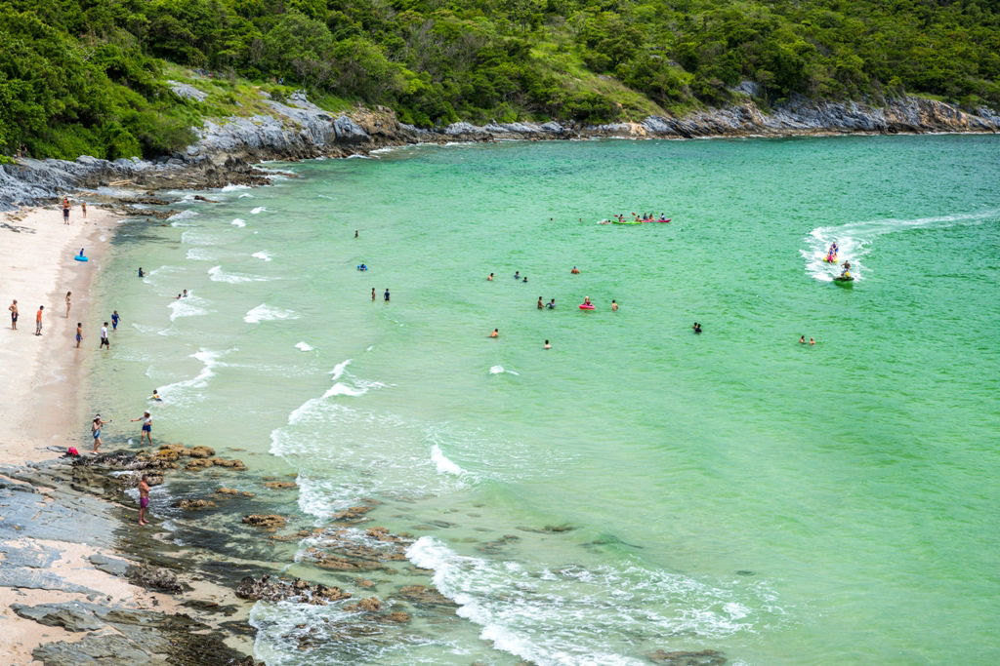
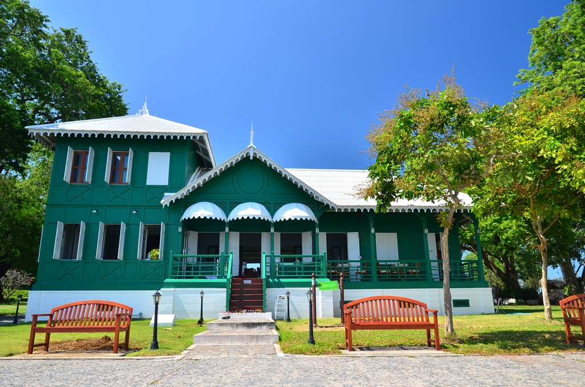

CHIVAR GO × SICHANGMake every island trip
Make every island trip
a feel-good adventure
All in one app.
Explore Koh Sichang and Koh Samui with a healthier, more sustainable way to travel. Discover quests, collect points and connect with the island community.


Free to open on the web
Verifiable activities
Connected to local communities
CHIVAR GO × ISLAND LIFE
Your island, connected
Explore, earn, care for the environment and connect with the community.
Green Points
Environmental actions verified by a local host
Trip Points
Travel points, kept separate from Green Points
Quests & missions
Explore, learn and care for the island
Waste drop-off
Find collection points on the island map
Adventure Map
Follow clues and discover local stories
Chivar Bot
Your guide to places in the app
Maps & directions
Plan your route and explore nearby
SOS & safety
Help information and location sharing
Travel parties
Find a team and take on quests together
Mascot & Pet
Meet companions and collect memories
Gashapon
Discover collectibles and draw conditions
Backpack
Keep your travel items and rewards
Passport & Season
Stamps, medals and seasonal activities
Local Picks
Local food, shops and island products
Places to stay
Explore stays and ask the operator
Community
Travel stories and moderated reviews
Travel Journal
Save photos, stories and personal notes
Mini games
Take a break and learn about the island
Wallet
Check your balances and transaction history
Hotel ESG
Activity evidence for existing reports
Host Console
Review evidence and manage activities
CHIVAR GO × ISLAND LIFE
Come home with more than a trip
Find your kind of adventure, then make it yours.



CHIVAR GO × ISLAND LIFE
Two islands. Endless discoveries.

THAILAND / KOH-SICHANG
Koh Sichang
Coastal heritage, island communities and adventures near Si Racha.
Explore feature
THAILAND / SAMUI
Koh Samui
Beaches, forests, waterfalls and local flavours waiting to be discovered.
Explore featureSMALL ACTIONS. SHARED MEMORIES.CHIVAR GO × ISLAND LIFE
Good journeys. A better island.
Choose a local shop, use a collection point and join a verified activity. Small choices make every journey an opportunity to care for the community.
CHIVAR GO × ISLAND LIFE
Your next adventure in four steps
- 01
Open ChivarGo on the web
- 02
Sign up and create a profile
- 03
Choose an island and explore
- 04
Complete quests and earn eligible points
CHIVAR GO × ISLAND LIFE
Grow with the island community
For shops, stays, local hosts and organisations creating meaningful travel experiences.
Travel with confidence
Host-verified Green Points. Separate travel points. Personal data controls through your existing account.
CHIVAR GO × ISLAND LIFE
Frequently asked questions
What is ChivarGo?+
Explore Koh Sichang and Koh Samui with a healthier, more sustainable way to travel. Discover quests, collect points and connect with the island community.
Which devices can I use?+
Use the website on a phone, tablet or computer. No app-store download is required.
How do Green Points differ from Trip Points?+
Green Points require host approval. Trip Points follow travel activity rules. Balances and history are kept separate in Wallet.
Do I always need a connection?+
Previously cached information is available offline. Some maps and directions need a connection. Evidence and rewards require server verification.
How is personal data handled?+
Use the app’s existing account controls. Location and camera access require device permission. See the privacy policy for details.
How can a business join?+
Submit the existing partner application. The team reviews operator details and permissions before console access.
Ready for your next island story?
Explore Koh Sichang and Koh Samui, earn points and connect with the community in one app.
Open ChivarGo